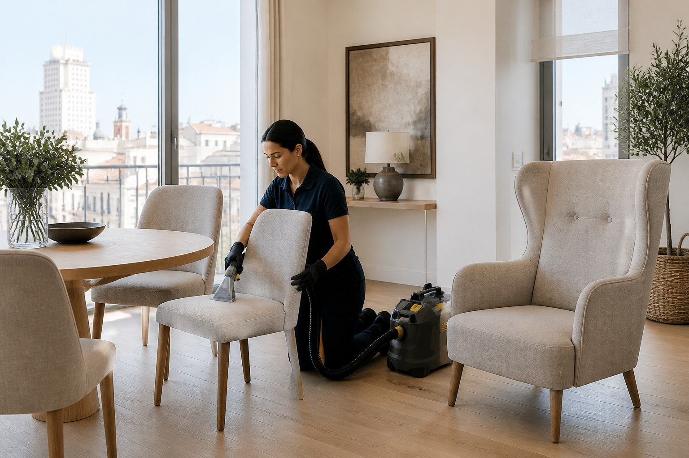

Sillas de comedor
Asientos tapizados y modelos con respaldo textil. Ideal para conjuntos de cuatro, seis u ocho unidades.
Recuperamos el aspecto de las piezas que más uso reciben: sillas de comedor, butacas, orejeros, bancos y pufs. Revisamos el tejido y las manchas antes de confirmar el precio.

Piezas que tratamos
No todas las sillas se limpian igual. La construcción, el relleno y el tipo de tapizado determinan el proceso.
Asientos tapizados y modelos con respaldo textil. Ideal para conjuntos de cuatro, seis u ocho unidades.
Limpieza de asiento, respaldo, laterales y reposabrazos, prestando atención a las zonas de mayor roce.
Valoración de bancos tapizados, cabeceros, descalzadoras y otras piezas fijas o de gran formato.
Pufs, reposapiés y pequeñas piezas textiles que pueden incorporarse a un servicio principal.
Orientación de precio
El precio definitivo depende del tamaño, de si se limpia solo el asiento o la pieza completa y del estado del tejido.
Asiento tapizado sencillo. Importe mínimo de servicio: 40€.
Asiento y respaldo tapizados. Precio orientativo por unidad.
Asiento, respaldo, laterales y reposabrazos según el modelo.
Envía una imagen general y otra de las manchas para recibir un precio cerrado.
Preguntas habituales
Las piezas pequeñas suelen agruparse o añadirse a otro servicio para aprovechar el desplazamiento. Con las fotos te indicaremos la opción más conveniente.
Se pueden trabajar, pero no prometemos su eliminación sin revisar antes el tejido, el producto que se haya utilizado y el tiempo transcurrido.
El secado depende del relleno, la ventilación y la temperatura. Al terminar te daremos una recomendación concreta para esas piezas.
Respuesta clara y directa
Mándanos unas fotos por WhatsApp y recibe una valoración adaptada a tu conjunto.
Solicitar valoración